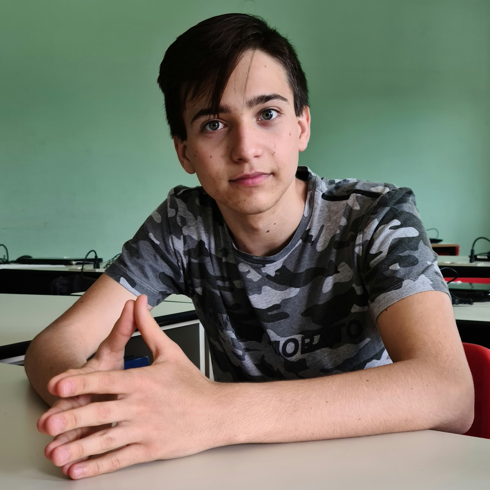

Chi sono? Come mi chiamo?
Mi presento sono Alexandru Chindris, sono un ragazzo di 17 anni
che frequenta la classe 3 dell' Istituto Internazionale Edoardo Agnelli.
Alla base della mia vita ci sono alcuni valori fondamentali.

Professionalità
La professionalità sta nel sapere come farlo, quando farlo, e nel farlo. Fare pubblicità è come un gioco. Per vincere, lascia fare a chi gioca tutti i giorni.
Motivazione
Niente che valga davvero la pena di essere fatto è facile. Anch'io ho incontrato diversi ostacoli lungo il cammino, ma non rimpiango nulla. Perché? Durante il mio percorso ho affinato e messo alla prova le mie abilità.
Passione
“Non c'è passione nel vivere in piccolo, nel progettare una vita che è inferiore alla vita che potresti vivere.”NELSON MANDELA
Fede
Avere fede significa credere, confidare e obbedire al volere di Dio. Chi ha fede vede l’esistenza di Dio in ogni cosa, da quelle più piccole a quelle più grandi.